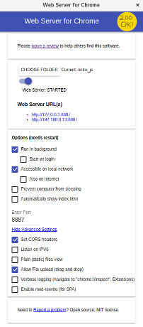

Nós iremos configurar seu ambiente de produção de código, o pré-requisito é o  , clicke no item a segui:
, clicke no item a segui:
Instale e execute o app!
Este aplicativo serve o conteúdo de alguma pasta local à sua escolha como se fosse um site
Marcado a opção "acessível na rede local", outros computadores do laboratório poderão ver o diretório compartilhado
Também é possível habilitar para que os visitantes do seu servidor consigam fazer upload para a sua pasta. Ou seja, fazendo um ajax POST com jsons estes serão salvos na pasta do seu computador
Cuidado, não há autenticação! Seu diretório está aberto pra escrita anônima.
Faça o download de tudo isto aqui
